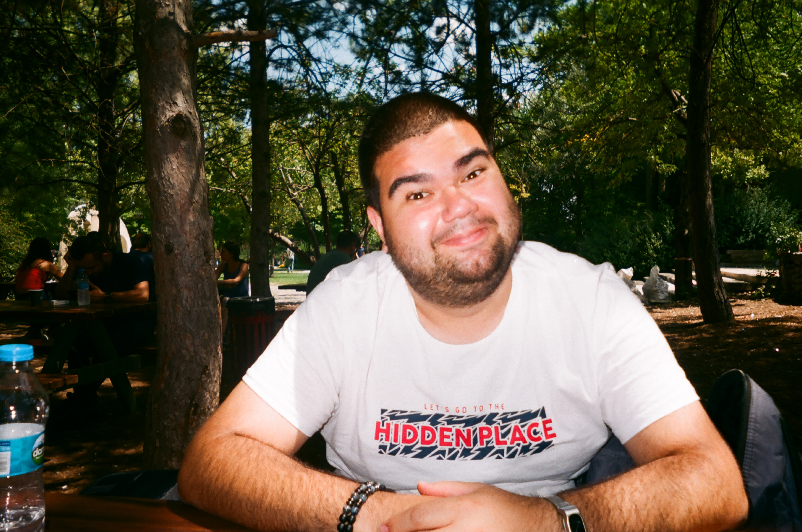

Aerospace Engineer Havacılık ve Uzay Mühendisi
I'm an aerospace engineer. I studied at METU and graduated in 2023. I got interested in UAVs during university, first out of curiosity, then it turned into a career.
But honestly, the place where I learned the most as an engineer wasn't school or work. It was backstage. Throughout my university years I worked on the technical crew of musical theatre productions. Lighting, sound, stage mechanics. Everything has to be ready before the curtain goes up, and working under that kind of pressure taught me how to solve problems quickly, manage people, and get things done. You won't find any of that in a textbook.
My professional experience started with internships at the Turkish Air Force and TAI. Before I even graduated I started working part-time at Minimal Aviation on embedded systems. After graduation I joined MFT Defence full-time, working on UAV development and flight testing. For over two years I was involved in everything from prototype manufacturing to field operations. Before moving to Germany I also worked briefly at SolidAero.
On the technical side I use Python, MATLAB, and C++. For design it's SolidWorks and CATIA, and for aerodynamic analysis OpenFOAM and XFLR5. I'm also a licensed drone pilot. Being able to fly what I test makes a real difference.
Right now I'm living in Nürnberg and looking for a new position in Germany. I have a Chancenkarte with full work authorization. I'm looking for something in flight test, systems engineering, or UAV development.
Outside of work I shoot photography, both film and digital. Streets, nature, the city. I also spend time on DIY electronics projects. Getting something to work from scratch never gets old for me.
Havacılık ve Uzay Mühendisiyim. ODTÜ'de okudum, 2023'te mezun oldum. Üniversitede İnsansız Hava Araçları ile ilgilenmeye başladım, önce meraktan, sonra işe dönüştü.
Ama dürüst olmak gerekirse, mühendis olarak en çok şeyi okulda veya işte değil, sahne arkasında öğrendim. Üniversite yıllarım boyunca müzikal tiyatro prodüksiyonlarında teknik ekipte çalıştım. Işık, ses, sahne mekaniği. Perde açılmadan önce her şeyin hazır olması gerekiyor ve bu baskı altında çalışmak, sorun çözmeyi ve insanlarla iş yapmayı öğretti bana. Bunları hiçbir ders kitabında bulamazsın.
İş deneyimim Türk Hava Kuvvetleri ve TAI'daki stajlarla başladı. Daha mezun olmadan Minimal Havacılık'ta part-time çalışmaya başladım, gömülü sistemler üzerine. Mezuniyetin ardından MFT Savunma'da tam zamanlı olarak UAV geliştirme ve uçuş testi yaptım. İki yılı aşkın bir süre boyunca prototip üretiminden saha operasyonlarına kadar her şeyin içindeydim. Almanya'ya taşınmadan önce SolidAero'da kısa bir dönem daha çalıştım.
Teknik olarak Python, MATLAB ve C++ kullanıyorum. Tasarım için SolidWorks ve CATIA, aerodinamik analizde OpenFOAM ve XFLR5. Ayrıca IHA-1 lisanslı bir drone pilotuyum. Test ettiğim şeyi bizzat uçurabiliyorum, bu fark yaratıyor.
Şu an Nürnberg'de yaşıyorum ve Almanya'da yeni bir iş arıyorum. Chancenkarte'im var, tam çalışma iznim mevcut. Uçuş testi, sistem mühendisliği ya da UAV geliştirme alanlarında bir pozisyon istiyorum.
İş dışında fotoğraf çekiyorum, hem film hem dijital. Sokakta, doğada, şehirde. Ayrıca DIY elektronik projelerine vakit ayırıyorum. Bir şeyi sıfırdan çalıştırmak hep tatmin edici geliyor bana.

From my university years onwards I worked as part of the technical crew on musical and stage productions in Ankara. I served as technical engineer and co-producer on Once Musical Turkey. I did video effects work on We Will Rock You and sound engineering on Across the Universe. I chaired the METU Musical Society for a period and provided technical consultancy to the Jazzberry Tunes Polyphonic Choir.
On top of that, I designed and built electronics-based props and accessories for various musical groups in Ankara. Light-up canes, LED helmets, remotely controlled signs, motorised mini sets. A good portion of what I know as an engineer about solving problems under pressure came from exactly this kind of work, where the curtain goes up whether you're ready or not.
Üniversite yıllarımdan bu yana Ankara'daki müzikal ve sahne prodüksiyonlarında teknik ekip olarak çalıştım. "Once" Müzikali Türkiye'de teknik mühendis ve ortak yapımcı olarak görev aldım. "We Will Rock You"da video efekt uzmanlığı, "Across the Universe"te ses mühendisliği yaptım. Bir dönem ODTÜ Müzikal Topluluğu yönetim kurulu başkanlığını yürüttüm. Jazzberry Tunes Polifonik Korosu'na teknik danışmanlık verdim.
Bunların yanında Ankara'daki çeşitli müzikal topluluklara sahnede kullanılmak üzere elektronik aksesuarlar tasarlayıp ürettim. Işıklı bastonlar, LED'li baretler, uzaktan kumandalı tabelalar, hareketli mini dekorlar. Bu projeler bana mühendislik açısından çok şey kattı. Perde açılacak, hazır olman lazım.
Repairing, dismantling, or repurposing old and vintage electronics is both a hobby and a way of learning for me. Embedded systems, RC platforms, sensor integration, prototype circuits. Working on these is often just as satisfying as anything I do professionally. From a Raspberry Pi-based DIY camera build to developing custom software for simulators, if it involves making something work from scratch, I'm probably interested.
Eski ve vintage elektronik cihazları onarmak, parçalara ayırmak veya farklı bir şeye dönüştürmek benim için hem hobi hem de öğrenme biçimi. Gömülü sistemler, RC platformları, sensör entegrasyonu, prototip devreler. Bunlarla uğraşmak çoğu zaman iş projeleri kadar tatmin edici oluyor. Raspberry Pi tabanlı DIY kamera projesinden simülatörler için özel yazılım geliştirmeye kadar, işe yarar bir şey ortaya çıkmak hoşuma gidiyor.
Photography became more than a casual hobby for me a while back. I shoot both film and digital, and each has its own rhythm and logic. With film you think more carefully about each frame because there's no going back. With digital you can experiment more freely. Streets, nature, the city, everyday moments. I don't overthink the subject, I shoot when the light and the moment feel right. Some of the photos on this site are mine.
Bir süre önce fotoğrafçılık benim için sıradan bir hobiden fazlası haline geldi. Hem film hem dijital çekiyorum. İkisinin de kendine özgü bir ritmi ve mantığı var. Film çekerken her kareyi daha dikkatli düşünüyorsun çünkü geri dönüşü yok. Dijitalde daha özgür deneyebiliyorsun. Sokak, doğa, şehir, gündelik anlar. Konuya çok takılmıyorum, ışık ve an güzel göründüğünde çekiyorum. Bu sitedeki fotoğrafların bir kısmı benim.
Served on the organising committee and as a referee for the METU VTOL Aircraft Competition. Worked as communications coordinator at METU Aerospace Society, Euroavia Ankara.
ODTÜ VTOL Uçak Yarışması'nın organizasyon komitesinde ve hakemler arasında yer aldım. ODTÜ Havacılık Topluluğu, Euroavia Ankara'da iletişim koordinatörü olarak çalıştım.
I enjoy taking photos. Sometimes film, sometimes digital. Streets, nature, the city. Below is some of what I've collected over time. You can find more on my Instagram.
Fotoğraf çekmeyi seviyorum. Bazen film, bazen dijital. Sokakta, doğada, şehirde. Aşağıda biriktirdiklerimin bir kısmı var. Daha fazlası için Instagram'da bulabilirsin beni.
If you'd like to get in touch, you can reach me through the channels below.
Benimle iletişime geçmek istersen aşağıdaki kanallardan ulaşabilirsin.